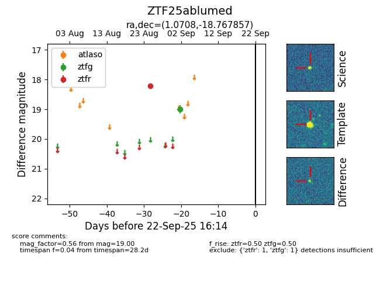

FINK: ZTF25ablumed
Lasair: ZTF25ablumed
ALeRCE: ZTF25ablumed
ZTF25ablumed (ztf,fink)
equatorial (ra, dec) = (1.0708,-18.76786)
galactic (l, b) = (68.0995,-76.31215)

last ztfg=19.00, ztfr=18.22
1 ztfg, 1 ztfr detections